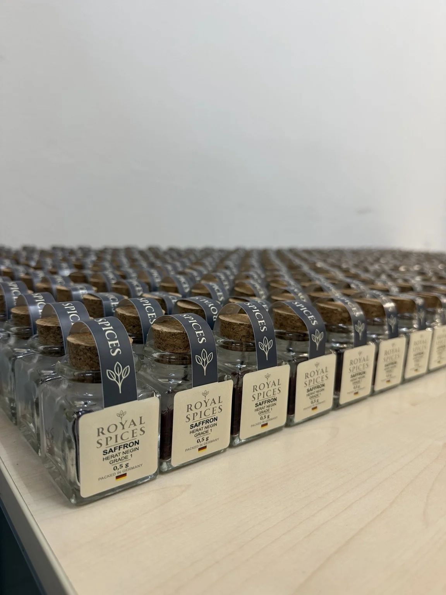
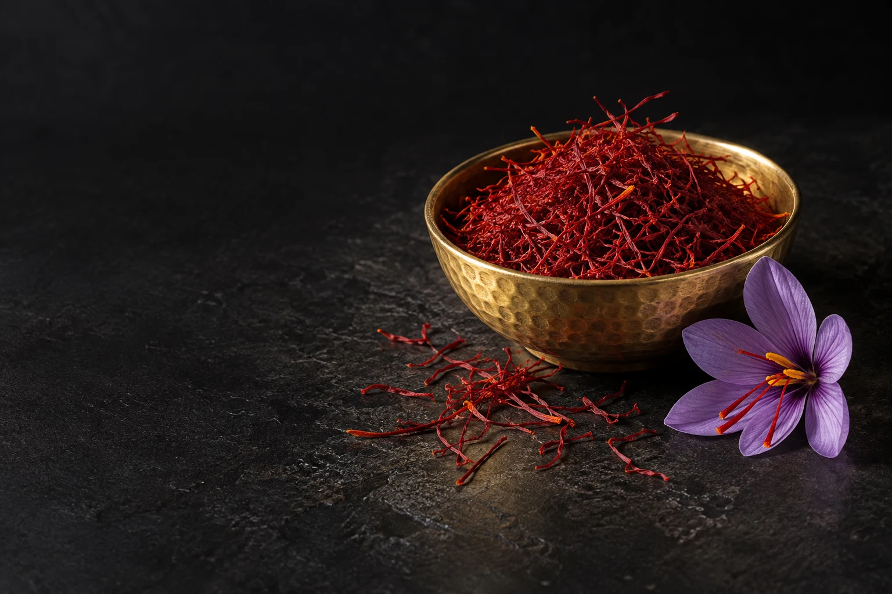
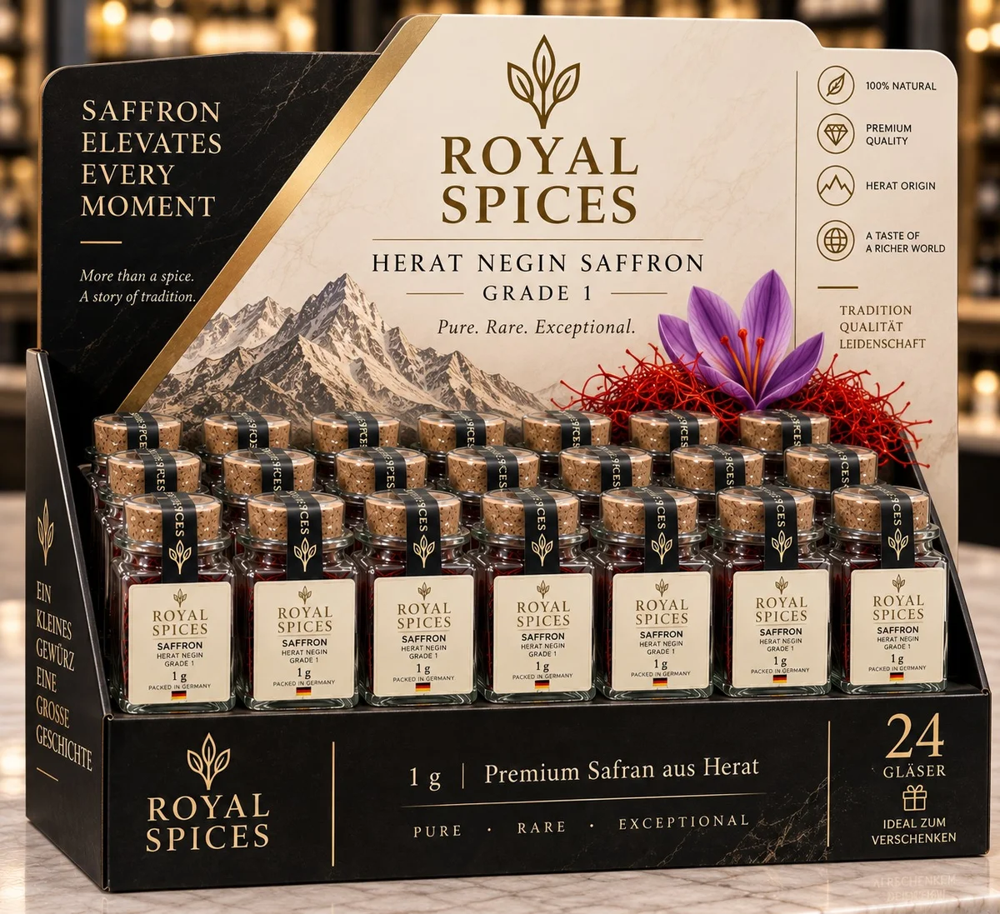
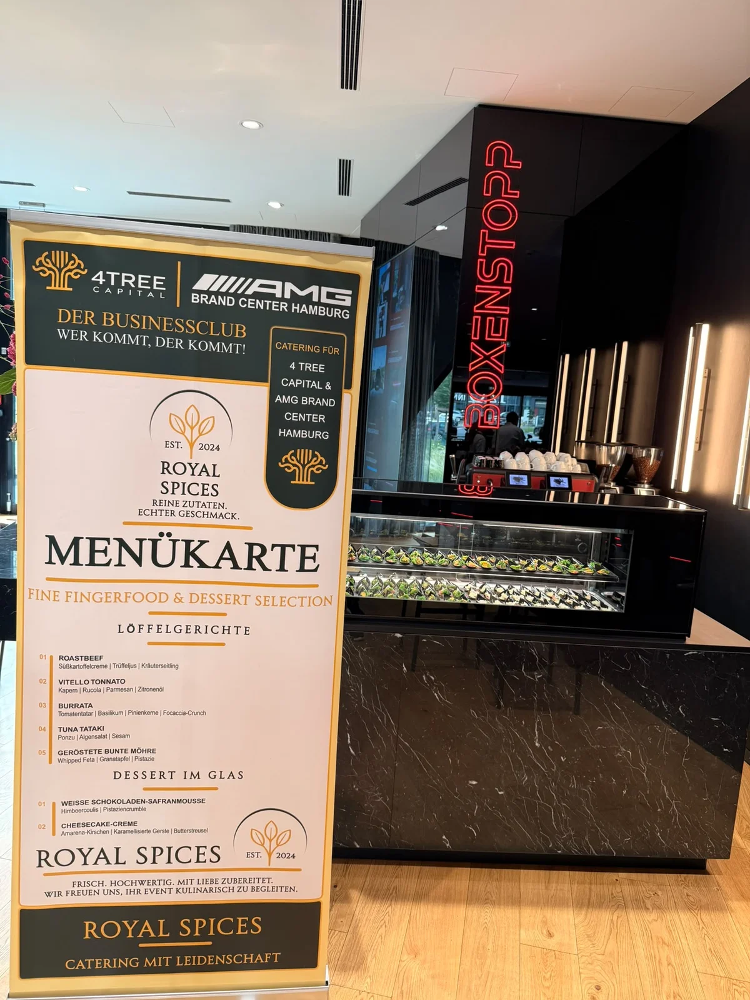

FÜR GASTRONOMIE & FEINKOSTDas Safranglas
4,90 € / 1 gHerat Negin für Ihre Küche oder zum Weiterverkauf.
Originalfoto: 0,5-g-Ausführung. Das Angebot gilt für 1-g-Gläser.
DAS ROTE GOLD AUS HERAT
Ganze Negin-Fäden. Ein unverwechselbares Aroma.
Für die Küche, die den Unterschied schmeckt.
01 / DIE ESSENZ
Schon wenige Fäden geben einer Komposition Tiefe. Entdecken Sie den Safran, der bei uns im Mittelpunkt steht.

Charakter beginnt im Detail. Unser Negin-Safran besteht aus ganzen, tiefroten Safranfäden.
Von Herat
in Ihre Küche.
Für uns steht das Produkt im Vordergrund: Herkunft, ganze Fäden und eine persönliche Beratung. Wir liefern Safran für Ihre Karte, Ihr Regal und Ihre nächste Idee.
Herkunfts- und Qualitätsnachweise anfragen02 / FÜR IHR GESCHÄFT
Vom einzelnen Glas bis zur großen Küche.
Wählen Sie, was zu Ihrem Geschäft passt.

FÜR GASTRONOMIE & FEINKOSTHerat Negin für Ihre Küche oder zum Weiterverkauf.
Originalfoto: 0,5-g-Ausführung. Das Angebot gilt für 1-g-Gläser.

FÜR IHREN POINT OF SALE24 Gläser. Ein besonderer Platz auf Ihrer Theke.
Produktvisualisierung. Lieferdetails im individuellen Angebot.
GROSSHANDEL · LOSE WARE AB 10 KG
Sorte, Qualität und Lieferkonditionen stimmen wir persönlich mit Ihnen ab.
Unverbindliche Richtpreise für lose Ware ab 10 kg. Umsatzsteuer, Verfügbarkeit, Versand und Lieferkonditionen werden im Angebot bestätigt.
Großhandel anfragen
03 / AM TISCH ZU HAUSE
Auch jenseits des Safrans. Mit Royal Spices Catering begleitet Sajad Akrami Ihre Veranstaltung persönlich, von der ersten Idee bis zum letzten Gang.
Empfänge · Business-Events · Private Anlässe
Hamburg & Umgebung
04 / DER ANFANG VON ETWAS GUTEM
Safran für Ihr Geschäft oder Catering für Ihren Anlass. Erzählen Sie uns, was Sie vorhaben.